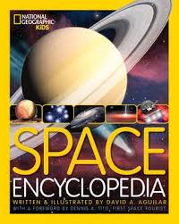
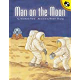
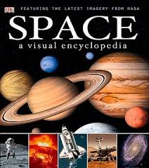

Books


First Space Encyclopaedia
Zoom off into the galaxy and investigate all the planets,
from Earth to Mars with First Space Encyclopaedia. Packed full of stunning
photography, quizzes and amazing facts, children will become space experts
in no time. Covering everything from observatories and rockets, to the solar
system and the death of stars, children will discover all about space and space
travel.
BEST BUY LINK

